El sistema
Todo ser humano forma parte de múltiples sistemas. Comprender nuestra posición dentro de ellos permite observar dinámicas que condicionan nuestra forma de sentir, vincularnos y actuar.
Una metodología experiencial que integra mirada sistémica, trabajo corporal y facilitación asistida por caballos.
Creada y dirigida por Jimena Marchisio · by MindCompass
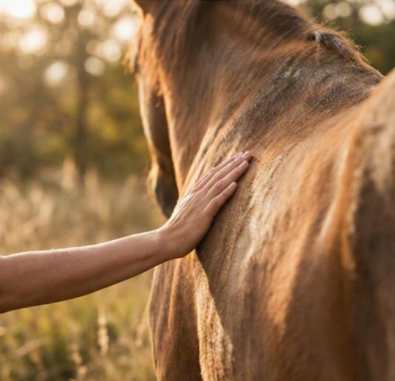
“Dejar de luchar con aquello de lo que estamos hechos.” La transformación no comienza cuando comprendemos nuestra historia. Comienza cuando dejamos de pelear con ella.
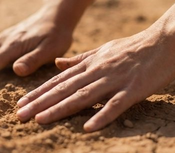
Necesitan una experiencia diferente.
Muchas personas conocen perfectamente su historia.
Y, sin embargo, continúan atrapadas en las mismas dinámicas. Comprender no siempre transforma.
La transformación ocurre cuando la experiencia alcanza aquello que la explicación no consigue tocar.
Por ello el cuerpo ocupa un lugar central. Los caballos participan como observadores y facilitadores fenomenológicos de aquello que permanece fuera de la conciencia verbal.
Un abordaje fenomenológico, corporal y experiencial orientado a facilitar procesos de integración personal, somática y relacional.
Su propósito es favorecer un encuentro honesto con la realidad para que la persona pueda dejar de luchar contra aquello que ya forma parte de su historia y de su cuerpo.
Cuando dejamos de rechazar partes de nuestra historia, recuperamos energía para construir nuestro futuro.
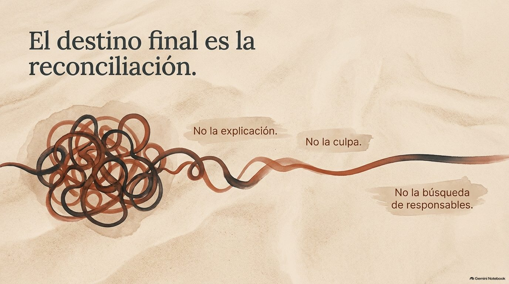
Todo ser humano forma parte de múltiples sistemas. Comprender nuestra posición dentro de ellos permite observar dinámicas que condicionan nuestra forma de sentir, vincularnos y actuar.
El cuerpo conserva información que muchas veces la narrativa no alcanza a expresar. La reconciliación auténtica se refleja en el cuerpo mucho antes de poder explicarse con palabras.
No analiza. No interpreta. No juzga. Tampoco responde a una historia verbal. Responde a la coherencia entre intención, emoción y presencia. Por eso puede convertirse en un espejo extraordinario de lo que realmente está ocurriendo dentro de cada persona.
El caballo muestra lo que la palabra no puede nombrar.Tocá cada principio para descubrirlo.
La transformación profunda comienza cuando dejamos de resistir aquello que ya ocurrió.
Aceptar no es resignarse. Aceptar es partir de la realidad para construir una nueva relación con ella.
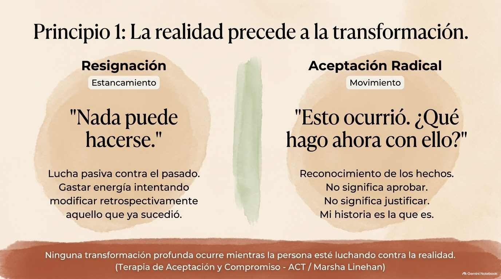
Todos hemos recibido la vida a través de quienes nos precedieron.
Reconocer este hecho no implica justificar conductas dañinas. Implica reconocer el origen que nos abrió la puerta de la existencia.
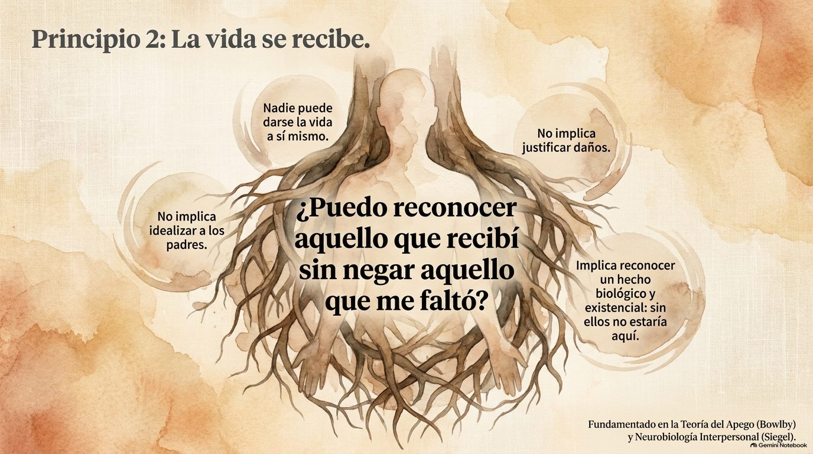
Con frecuencia aquello que rechazamos intensamente en otros permanece activo en nosotros mismos.
La reconciliación con la historia es también una reconciliación con la propia identidad.
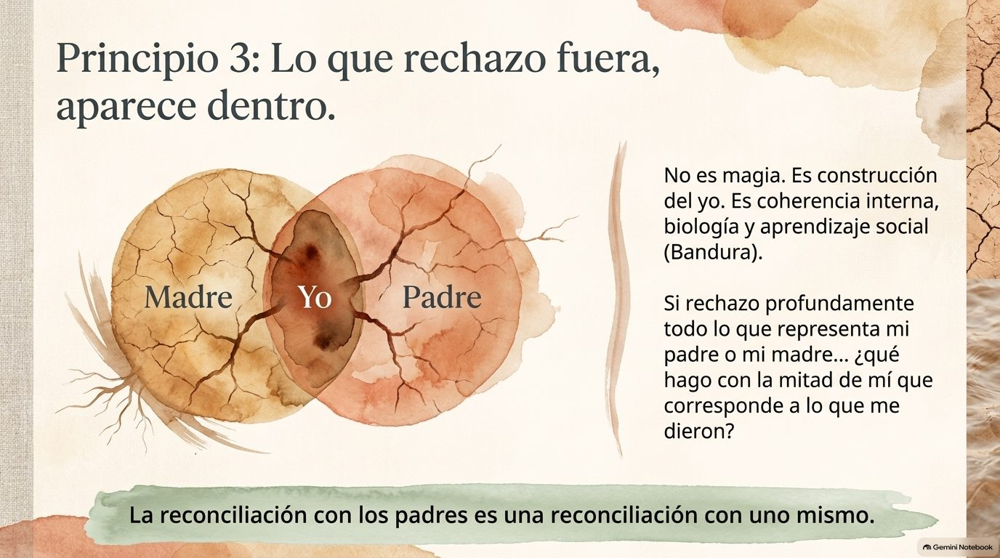
La reconciliación es con uno mismo.
La integración ocurre cuando la narrativa y la experiencia corporal dejan de estar en conflicto.
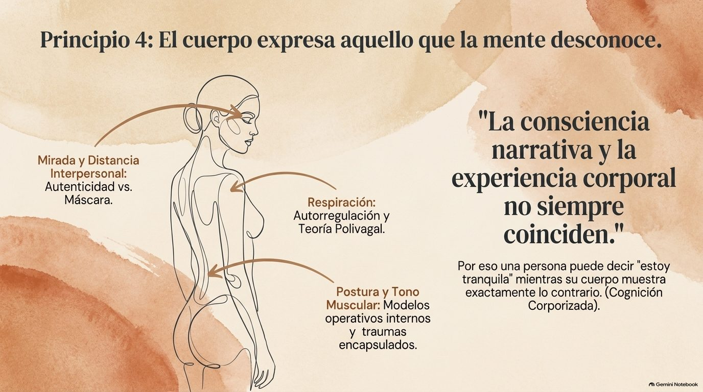
Comprender no basta. El cambio sostenible requiere experiencia vivida.
Práctica. Presencia. Participación.
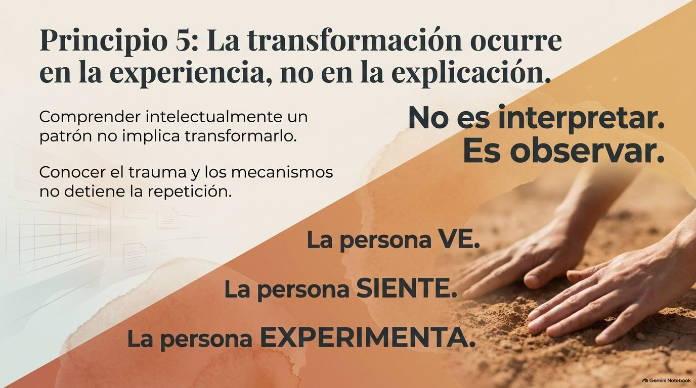
El caballo refleja aquello que permanece oculto tras los discursos y explicaciones. Sus movimientos nos brindan información valiosa sobre el estado de nuestro sistema nervioso, la coherencia corporal y los patrones de comportamiento.
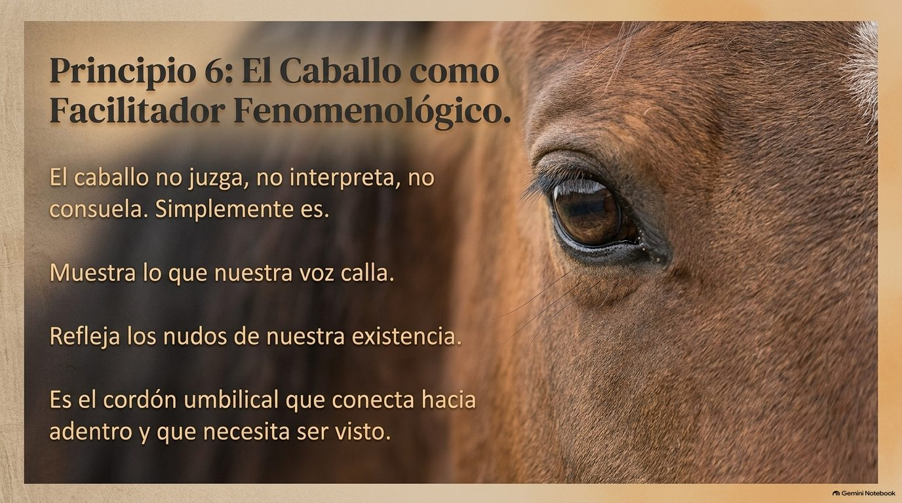
Cuando estas dimensiones se encuentran, emerge el espacio para la reconciliación.
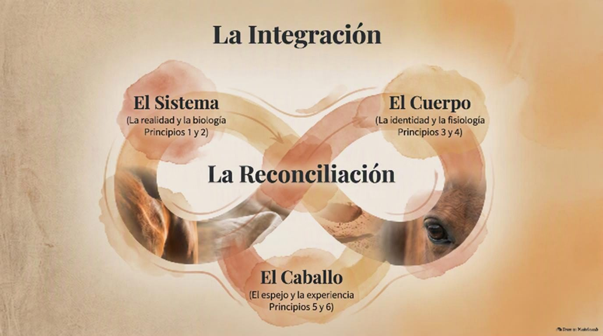
Y también a personas que deseen iniciar un proceso profundo de desarrollo personal a través del cuerpo, la naturaleza y la interacción con caballos.
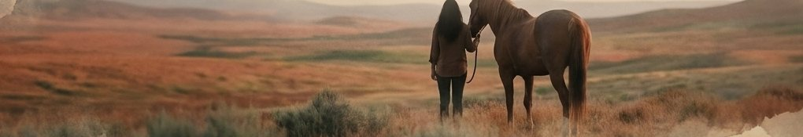
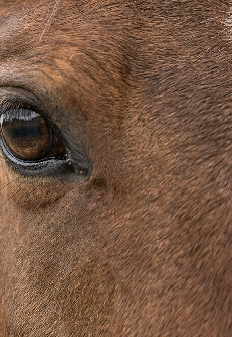
Durante seis días compartiremos mucho más que un proceso formativo. Compartiremos una experiencia.
Y el tiempo necesario para que cada participante pueda atravesar su propio proceso.
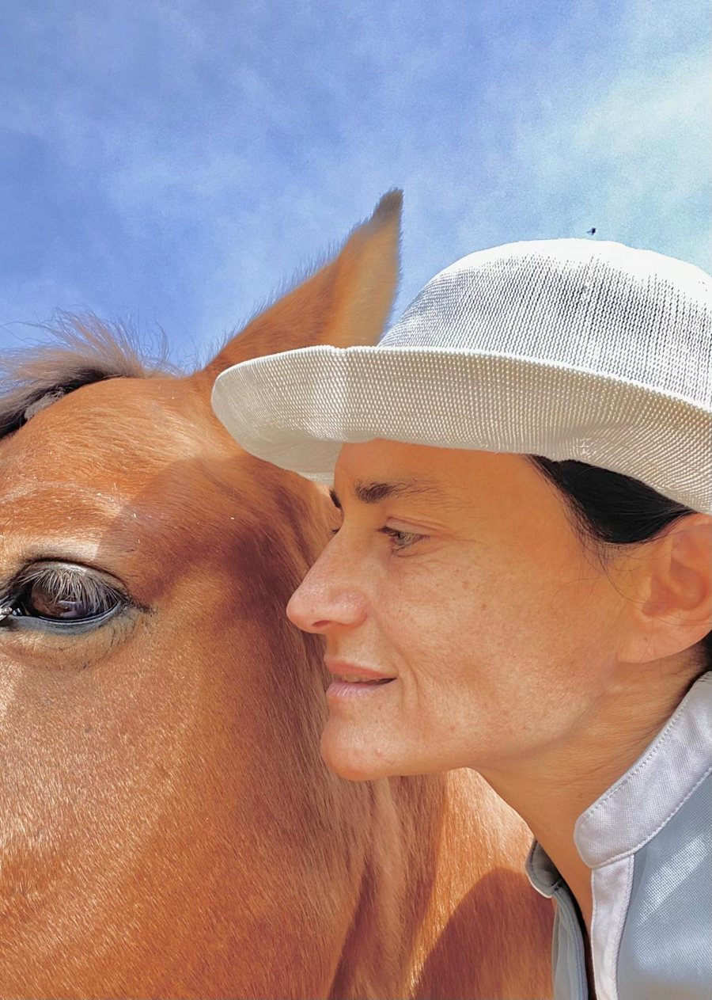
Fundadora de MindCompass
Docente universitaria, profesional ecuestre y diseñadora de experiencias de aprendizaje asistidas por caballos. Creadora de la metodología Reconciliaciones Sistémicas con Caballos.
Su trabajo integra una mirada sistémica, el aprendizaje experiencial, terapia postural, prácticas ecuestres y fundamentos contemporáneos de la psicología y las neurociencias.
@mindcompass.pty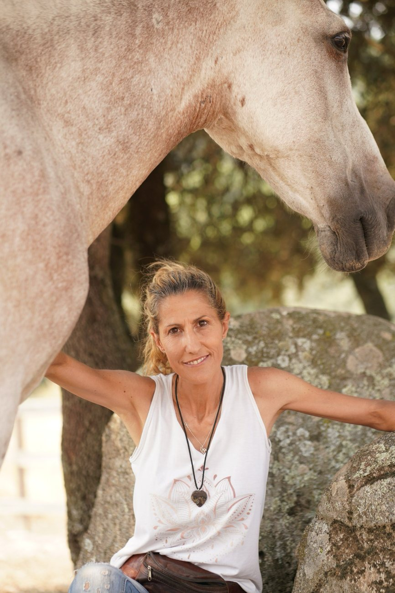
Fundadora de Sentir Caballos
Apasionada de los caballos, de la transformación personal, y la integridad del ser. Experta en etología equina y equinoterapia, facilitadora de constelaciones sistémicas, sanación cénturi, coherencia cardiaca, coaching con caballos y recalibración energética.
Docente colaboradora. Aporta su experiencia en acompañamiento humano, sanación con caballos, coherencia cardíaca y reequilibrio energético.
@sentir_caballosLejos de constituir una propuesta esotérica o interpretativa, este método se apoya en aportes contemporáneos de la psicología y las neurociencias.
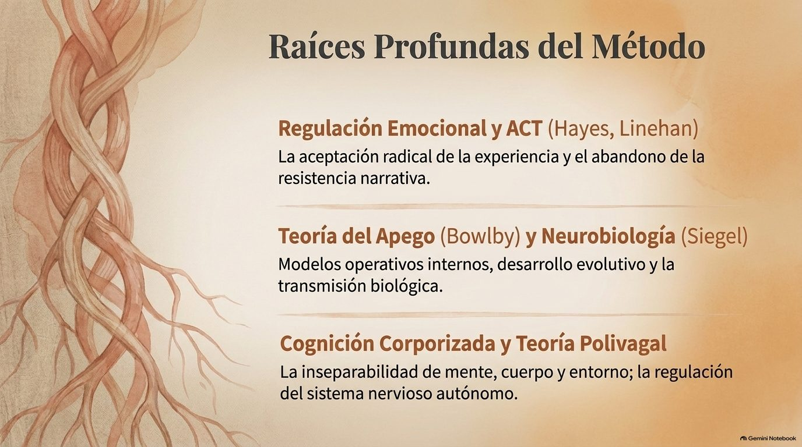
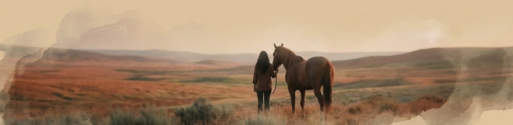
Venimos a cambiar la relación que mantenemos con ella. Aquello que rechazamos continúa condicionándonos. Aquello que podemos incluir comienza a transformarnos.
Una invitación a dejar de luchar para poder avanzar.
A regresar a la fuente de quienes somos.
A reconciliarnos con la vida.
16 al 21 de febrero de 2027 · Vedia, Buenos Aires
WhatsApp: +34 611 55 85 75 · +507 6563-7838